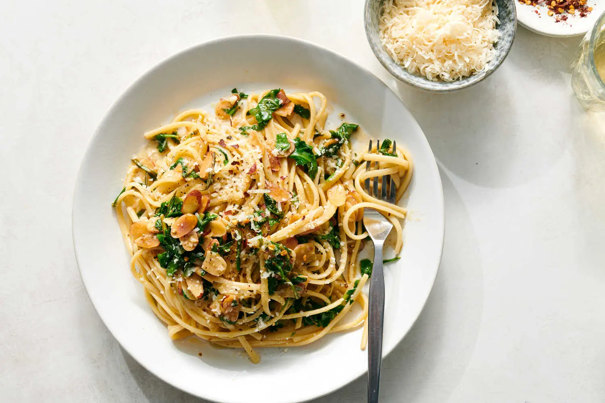

Fine salt and freshly ground black pepper
1 pound linguine or spaghetti
6 tablespoons unsalted butter
1 cup sliced almonds
2 fresh rosemary sprigs
¼ teaspoon red-pepper flakes, plus more to taste
¼ cup freshly squeezed lemon juice, plus more to taste
1 tablespoon finely grated lemon zest
4 to 5 ounces baby or wild arugula, coarsely chopped, or use baby kale or spinach (4 to 5 cups)
Grated Parmesan, for serving
